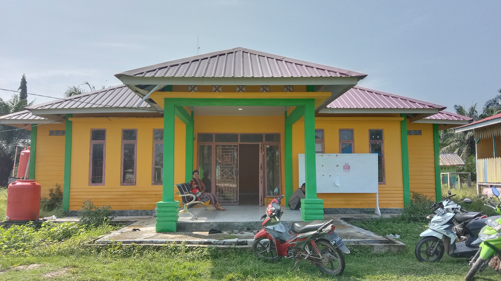
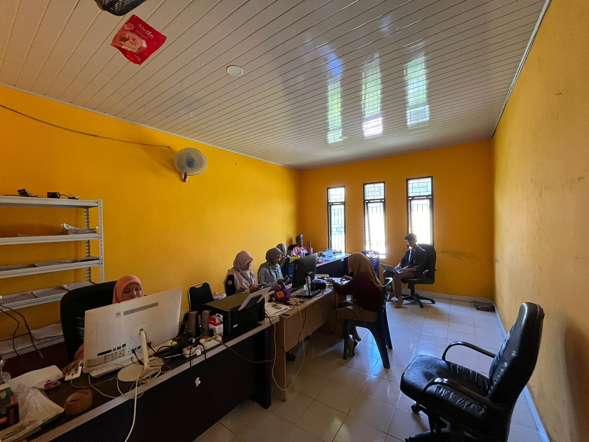

Kelurahan Batu Teritip – Informasi pelayanan, profil wilayah, dan data statistik masyarakat.

Kelurahan Batu Teritip merupakan salah satu wilayah administratif yang berada di Kota Dumai. Website ini bertujuan untuk memberikan informasi yang transparan, akurat, dan mudah diakses oleh masyarakat terkait layanan publik dan data wilayah.